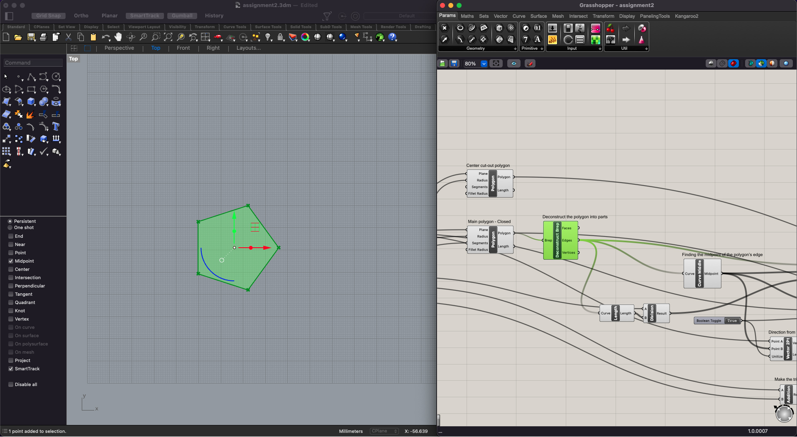

A2: Parametric Modelling with Grasshopper

I used the "Grasshopper" command in Rhino to open Grasshopper. I created a point in Rhino. With the point selected, I then used the "Point" component in Grasshopper to set the point.

I created a polygon in Grasshopper and attached it to the set point. I used the "Number Slider" component to set the values of the polygon. Just to make it a little more interesting, I created a smaller polygon to cut out of the main polygon.

In order to isolate the side of the polygon to eventually find its midpoint, I deconstructed the polygon into parts using “Deconstruct Prep.”
To center the cuts I wanted to make on each edge of the shape, I used "Curve Middle" to find the midpoint of each edge segment and set the appropriate angle of the cut using "Vector 2Pt" (the direction that results from connecting the centerpoint of the polygon with the midpoint of the polygon's edge). The "Scale" component then sets the width of the cut at each edge. The scale factor is the desired width of the cut divided by the length of the polygon edge.